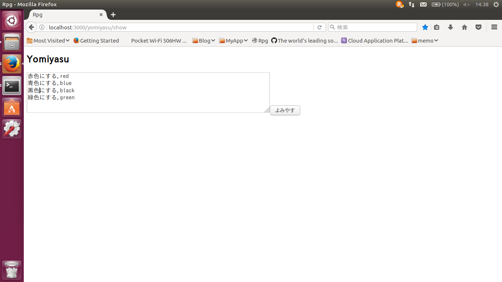
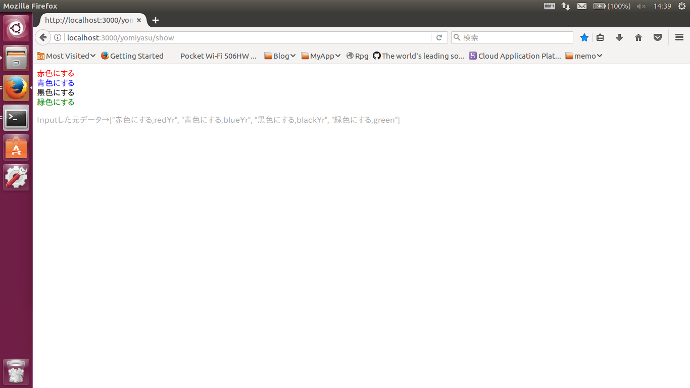

AS400/RPGのエディタって、文字の色は一色（ISDBでは色がつきますが）、歴史感じるソースコードは死んだ行ばかりだったり、スクロールできなくて、１画面ずつしか見られなかったりと、そんなに読みやすいものではないと思います。
これはRubyの勉強を始めて、Visual Studio Codeを使ったり、vimを使ったりして感じたことです。AS400/RPGのエディタもリピートとかコピーとか、検索・置換もできて、まぁ便利なところも結構あるのですが。
私はいつもソースをローカルにDLして、エクセルに展開し、コメント行はグレーアウトしたり、 ネストが深いものは開始と終了に色をつけたり囲ったりして、理解しやすくなるように工夫をしています。
初期画面はかいぎょうくんに近いものの、これはモデルを使っていません

RPGソースはものによっては不要なコメント行が多く見にくいのです。それを少しでも見やすくできれば。

結果はこのような感じ。見やすくなるようさらに改良していきたいです

行ごとに色を変えられるかやってみた。
結果はできそうである。これを応用すれば、よみやすくな〜るはできる。もう完成したも当然だ。あとはモデルでデータをもつようにし、正規表現でパターンと色を設定し、Herokuにあげれば（ここがエラーとの格闘）OKである。
